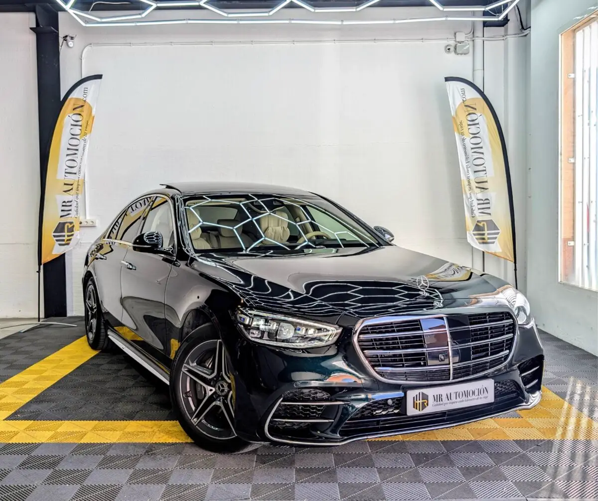

1 / 24Ponemos a la venta este espectacular e impecable Mercedes-Benz Clase S 580 4Matic , la berlina de representación premium por excelencia y el referente mundial en distinción, seguridad y calidad de rodadura. Una unidad de origen nacional matriculada en febrero de 2024 que registra 53.000 km reales y totalmente certificados en su historial.
Este ejemplar se encuentra en un estado estrictamente idéntico a su estreno, configurado con una de las listas de extras de fábrica más extensas y exclusivas que se pueden especificar. El corazón de este Clase S es un portentoso motor de gasolina V8 biturbo de 4.0 litros que rinde 503 CV de potencia, asociado a la suave y rápida transmisión automática de 9 velocidades y al eficaz sistema de tracción integral inteligente 4Matic .
Gracias a su avanzada tecnología de hibridación ligera de 48 voltios, este majestuoso gran turismo ofrece un rodar sedoso y un empuje imperial con una eficiencia sorprendente, beneficiándose por completo de todas las ventajas de movilidad de la etiqueta ECO de la DGT . Presencia majestuosa en Verde Emerald y paquete AMG Pintura metalizada verde emerald: un color de catálogo exclusivo sumamente elegante que se muestra casi negro en la sombra y revela un profundo destello verde esmeralda bajo la luz directa del sol.
Paquete deportivo AMG line exterior: incorpora el kit de carrocería con paragolpes específicos, entradas de aire optimizadas, faldones laterales ensanchados y un difusor trasero deportivo con dobles salidas de escape cromadas, complementado con alfombrillas específicas AMG. Llantas de aleación AMG: espectaculares llantas de aleación ligera firmadas por AMG de 19 pulgadas en diseño de 5 radios dobles con acabado bitono, que albergan un sistema de frenos deportivo con discos más grandes en el eje delantero.
Iluminación revolucionaria Digital Light: faros delanteros con tecnología de proyección digital de alta resolución, equipados con el sistema de limpiaparabrisas calefaccionado Aquablade y el sistema de proyección del logotipo de la marca mediante los espejos exteriores. Detalles de alta gama: tiradores de las puertas escamoteables que se despliegan automáticamente, cristales traseros tintados oscuros para mayor privacidad y un imponente techo solar panorámico corredizo doble de cristal.
Atmósfera VIP en cuero exclusivo napa y tecnología de vanguardia Asientos dinámicos de confort en cuero exclusivo napa: espectaculares butacas delanteras y traseras con cámaras de aire activas y regulables para un apoyo lateral perfecto en curvas, equipadas con regulación eléctrica integral, reposacabezas de confort para conductor y acompañante, múltiples memorias y control de climatización activa (calefactables y ventilados).
Puesto de mando digital de última generación: cuadro de instrumentos digital con efecto tridimensional frente al conductor, acompañado por una pantalla central alta de grandes dimensiones, sistema multimedia MBUX con realidad aumentada para la navegación y puertos USB adicionales. Volante deportivo AMG: volante multifunción achatado en su parte inferior tapizado en cuero napa de color crema a juego con el interior y la tela beige del techo, combinado con las exclusivas molduras interiores en madera de veta abierta color antracita Fineline.
Sonido envolvente Burmester y confort premium: sistema de audio premium de alta fidelidad, iluminación ambiental premium activa personalizable que recorre todo el interior y el avanzado sistema de purificación y filtrado de aire Energizing. Detalles prácticos VIP: sistema de control gestual sin contacto en la parte frontal, acceso y arranque sin llave Keyless-Go, cierre remoto automatizado del maletero con protección del umbral de carga cromada, portavasos, tomas de corriente de 12 V en el compartimento de carga y una práctica función de carga pasante mediante el reposabrazos trasero.
Seguridad proactiva y chasis inteligente de referencia Equipado con el compendio de seguridad más avanzado del mundo: control de crucero interno autónomo plus (Distronic Plus), sistema de visión de 360 grados con vista envolvente, asistente de estacionamiento con función de control remoto, columna de dirección ajustable eléctricamente con airbag integrado, retrovisores interiores y exteriores con atenuación automática, sistema de alarma con protección interior, anclajes de seguridad para asientos infantiles con marcaje i-Size (el sucesor de Isofix), preinstalación para sistema de soporte de techo y sistema de llamadas de emergencia e-call.
Tu compra segura con MRAutomoción: ✅ Inspección y puesta a punto de reestreno: vehículo rigurosamente verificado en todos sus puntos clave por nuestros técnicos especializados antes de su entrega. ✅ IVA deducible incluido . ✅ Kilometraje certificado. ✅ Garantía completa de 1 año (12 meses) incluida. ✅ Transferencia incluida: cambio de nombre y gestión documental listos en el precio final llave en mano, sin costes ocultos. ✅ Consúltanos nuestras ventajosas opciones de financiación flexible a tu medida con excelentes condiciones.
| Marca | Mercedes-Benz |
|---|---|
| Modelo | Mercedes-Benz Clase S 580 4Matic 503CV 2024 |
| Año | Feb 2024 |
| Kilómetros | 56.000 km |
| Combustible | Híbrido |
| Cambio | Automático |
| Potencia | 503 CV |
| Garantía | 1 Año |
| IVA | DEDUCIBLE INCLUIDO |
Quizá también te encaje